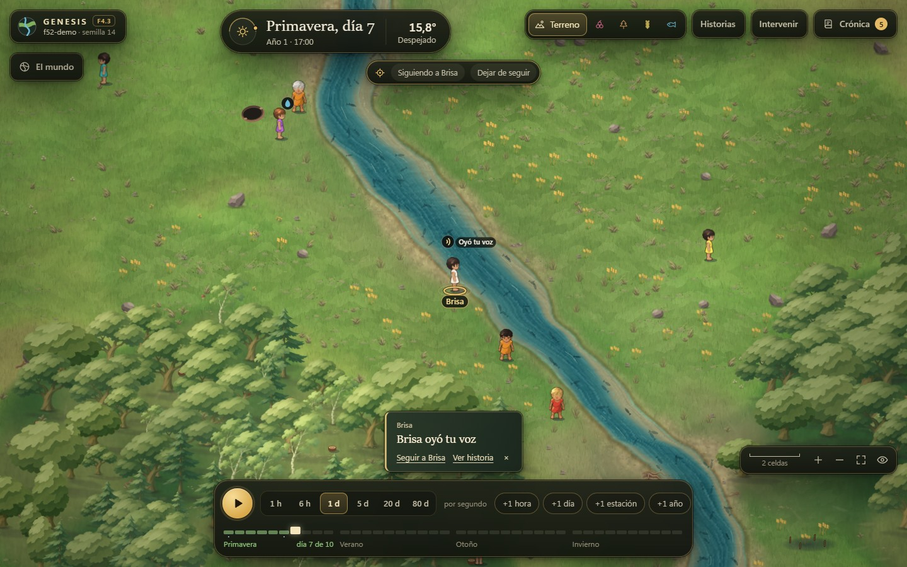

<!doctype html>
<html lang="es">
<meta charset="utf-8">
<meta name="viewport" content="width=device-width,initial-scale=1">
<title>GENESIS · Observar a Brisa</title>
<style>
* { box-sizing:border-box } body { margin:0; background:#19221c; color:#eee8d9; font:16px/1.5 system-ui,sans-serif }
main { max-width:1476px; margin:auto; padding:20px } header,nav { display:flex; flex-wrap:wrap; align-items:center; justify-content:space-between; gap:12px }
h1 { font:500 28px Georgia,serif; margin:0 } select,button { font:inherit; color:inherit; background:#28372d; border:1px solid #798777; padding:5px 12px; border-radius:6px }
button { cursor:pointer } button[aria-pressed="true"] { background:#dec696; color:#20251d } figure { margin:14px 0 } img { display:block; width:100%; aspect-ratio:8/5 } figcaption { margin-top:8px; color:#d8cfbb } a { color:#ead5a5 }
</style>
<main><header><h1>Observar a Brisa</h1>
<label>Momento <select id="escena"><option value="voz">Oye la voz</option><option value="encuentro">Pide compañía</option></select></label>
<div role="group" aria-label="Versión del visor"><button id="antes" aria-pressed="false">Antes</button> <button id="despues" aria-pressed="true">Después</button></div></header>
<figure><a id="original" href="despues-voz.jpg"></a><figcaption id="pie" aria-live="polite"></figcaption></figure>
<nav><a href="brisa-y-unai.mp4">Ver el recorrido de Brisa</a><a href="encuentro-libre.jpg">Cira acompaña a Lena en el mundo libre</a><a href="ficha-resumen.jpg">Ficha de Brisa</a><a href="historia.jpg">Historia del agujero</a></nav></main>
<script>
const escena=document.querySelector('#escena'), foto=document.querySelector('#foto');
let version='despues';
function mostrar() {
  const voz=escena.value==='voz';
  foto.src=version+'-'+escena.value+'.jpg';
  document.querySelector('#original').href=foto.src;
  foto.alt=(version==='antes'?'Antes':'Después')+' · '+escena.selectedOptions[0].text;
  document.querySelector('#pie').textContent='Semilla 14 · Día 7, '+(voz?'17 h':'18 h')+' · 40 píxeles por celda. '+(voz?'Brisa oye la advertencia.':'Brisa pide compañía a Unai, que acude a la llamada.');
  for (const id of ['antes','despues']) document.getElementById(id).setAttribute('aria-pressed',String(id===version));
}
for(const id of ['antes','despues']) document.getElementById(id).onclick=()=>{version=id;mostrar()};
escena.onchange=mostrar; mostrar();
</script>
</html>
